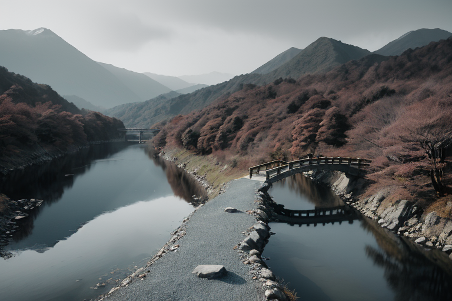
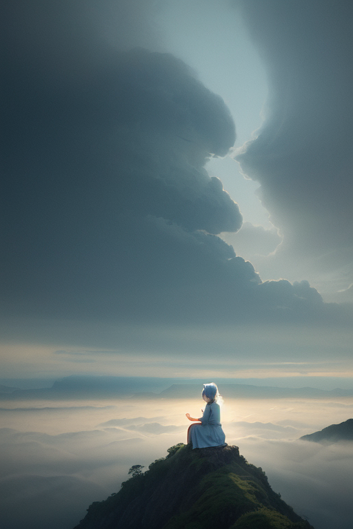
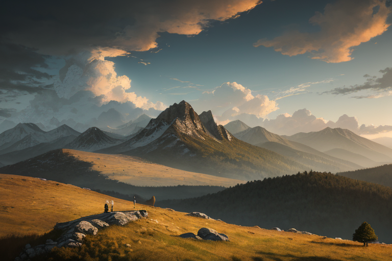
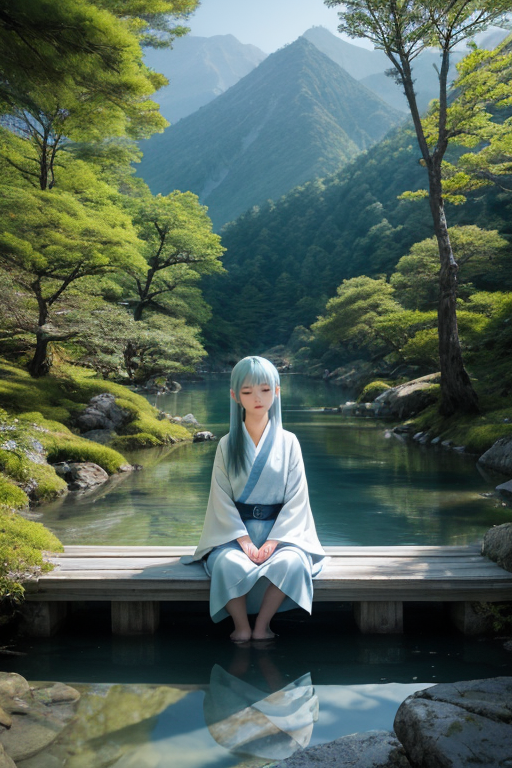
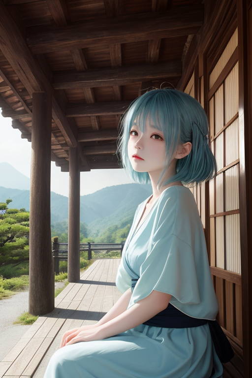

第一章 現実の長野
あなたはまだ気づいていない。この土地にも、王がいることを。
上高地の梓川は、穏やかな水音で静寂を運ぶ。その静けさは、日本列島を縦断する巨大な歪みの断層が、すぐ足下を通っているという現実を、決して否定しない。ここは境界の地だ。北アルプスの峻険な山々が、内と外を隔て、時にその圧力が地中で軋む。
王、ナガノリア・セルフは、河童橋のたもとに佇んでいた。青と白の静円をまとうその姿は、観光客の目には、ただの物思いに耽る青年に映る。彼の役目は、歪みのエネルギーを微調整すること。巨大な力そのものを消すことはできない。せいぜい、揺れの規模を一段階小さくし、その衝撃が人々の心に与える亀裂を、ほんの少しだけ浅くすることだ。
彼は己の内側を見つめる。感情を持たぬはずの王が、この土地の密度の高い静寂と、そこに棲む人々の内省的な祈り——善光寺へと続く信仰の道程のようなもの——に触れ、一種の「迷い」を覚え始めていた。自分は何を調整しているのか。地形か、それとも人の心の襞か。

第二章 歪みの兆候
松本城の天守から北アルプスを望む。その稜線は、内省王ナガノリア・セルフの精神波と同期し、微細な歪みを検知するセンサーのようだった。今日、その波長に乱れが生じている。遠く、日本海側から、低気圧という巨大な「外部の意志」が接近していた。それは単なる気象現象ではない。異なる地殻プレートの圧力が大気の流れに乗り、この内陸の盆地に、見えない境界線を越えた軋みをもたらそうとしている。
「王、歪みの兆候は『風』に現れます」と、主席妖精セルフィアが囁いた。その声は、軽井沢の雑木林を抜ける高原の風そのものだった。「人々は、理由のない不安を覚え始めています。そばを打つ手が、ほんの一瞬、乱れる。おやきを包む指先に、かすかなためらいが生まれる。それは、外から押し寄せる気圧の変化が、内側の静寂を侵食し始めた証です」
王は目を閉じた。川中島の古戦場でさえ、かつては外部からの侵攻という巨大な歪みに晒された。彼の役目は、戦いを消すことではない。その衝撃がこの土地の「内省」という特質を決して折らないよう、境界で受け流し、かたちを変えることだ。今、迫る低気圧という外部の力。彼は自問する。自分という「内」は、この「外」と、どう向き合えばよいのか。

第三章 王の葛藤
松本城の天守から、王は北アルプスの稜線を見つめた。迫り来る低気圧は、山肌を這う灰色の影となって広がっていた。外部からの圧力。それは時に、この内陸の王国が最も苦手とするものだ。歪みの調整は、常に「受け流す」か「跳ね返す」かの狭間にある。彼は自らの内側に問うた。この圧力を、単に境界で遮断すべきか。それとも、自らの内に取り込み、変容すべきか。
「主よ、風は乱れます」
セルフィアがそっと告げた。彼女の精神波は、王の迷いを静かに映し出していた。拒絶は容易い。だが、それでは歪みは解消されず、別の形で蓄積するだけだ。川中島で武田と上杉が繰り返したように。
王は掌を広げた。高原の風が、そっとその手のひらに絡みつく。拒むのでもなく、飲み込むのでもない。第三の道──受け入れ、自らの内で静かに反芻し、かたちを変えて放出すること。内省の本質は、そこにあるのかもしれない。彼は深く息を吸い込んだ。冷たい空気が、胸の奥の迷いを少しずつ洗い流していく。

第四章 妖精との対話
上高地の梓川のほとりで、セルフィアは風に溶けるように立っていた。彼女の声は、穏やかな水音と混ざり合う。「王よ。私たちは出会いと別れを、ただの境界として扱います。しかし、それは内省の始まりに過ぎないのです」
彼女は、善光寺の参道を歩く巡礼者の群れを指さした。「あの人たちは、遠くから『外』へとやって来て、お堂という『内』で己と向き合う。そして再び『外』へ帰っていく。その一連の流れそのものが、祈りなのです」
王は黙って聞いた。軽井沢の別荘地で、都会から訪れた人々が一時の静寂を求め、去っていく光景を思い浮かべる。アルペナがそっと囁いた。「風は、山のこちら側と向こう側を行き来します。どちらにも留まらない。留まろうとすれば、それは淀み、歪みとなるだけです」
「つまり」と王は呟いた。「自分と向き合うとは、内と外の往来をやめないことか」
セルフィアがうなずいた。「そうです。川中島で刃を交えた者たちも、戦いという『外』の衝突を通じて、己の『内』の覚悟を確かめ合った。すべての出会いは、己の中の未知なる『外』との遭遇です。すべての別れは、新たな『内』への帰還。その往来を恐れず、哀しみも希望も、ただ静かに見つめること。それが、この高地の王国の在り方です」
王は、胸の内に去来する迷いという名の風を、もう拒まなかった。

第五章 微調整と余韻
軽井沢の旧銀座通りを、高原の風が通り抜ける。観光客のざわめき、カフェの珈琲の香り、古い西洋館の影。王はその雑踏の片隅に立ち、人々の交錯する「縁」に触れた。ここは異文化が交わる山境。出会いと別れが、常に新しい「内」を生み出していた。
彼は微調整を始める。転びそうな子供の足元の小石を、ほんの少しだけ風で転がす。迷える旅行者の目に、ふと懐かしい看板が映る角度を調整する。それは救済ではない。ほんのわずかな「間」を作り、人が自らと向き合う契機を紡ぐ作業だ。セルフィアが傍らでそっと囁く。「すべての邂逅は、己への問いかけです」
善光寺の鐘の音が、遠く風に乗って聞こえた。王は自らの内なる迷いの風音を、この土地のざわめきと重ねて聴いた。彼は災害を消せない。ただ、出会いの一瞬を、ほんの少しだけ深くする。別れの痛みを、ほんの少しだけ未来へと溶かす。それが、この静かな王国の守り方だった。
風が止み、通りは日常の時間を取り戻す。誰も気づかない、ほんの少しの余韻だけが、そこに残された。
あなたの町にも、王がいる。